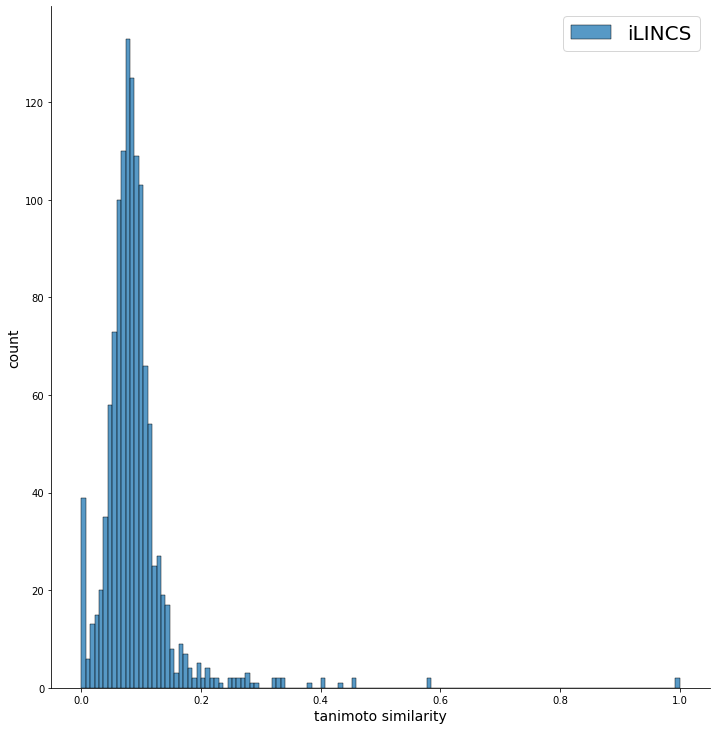

Для анализа химической активности соединений была использован принцип молекулярного подобия. В его основе лежит идея, что структурно схожие молекулы предположительно обладают сходной активностью. Поиск структурного сходства молекул основан на доле функциональных групп, которые присутствуют одновременно в обеих молекулах. Для описания молекул были использованы molecular fingerprints (Morgan Fingerprints), которые содержат информацию о присутствии или отсутствии определенных признаков в химическом соединении, например, фрагментов. Пространства fingerprints были визуализированы с помощью различных методов уменьшения размерности, таких как PCA, t-SNE и UMAP. Структурное сходство двух молекул чаще всего оценивается путем вычисления коэффициента Танимото (Tc, tanimoto_similarity). Для наглядности, были построены распределения Tc. При кластеризации малых молекул сходство внутри каждого кластера определяется коэффициентом Танимото. При кластеризации был использован алгоритм, предложенный в статье: Unsupervised Data Base Clustering Based on Daylight's Fingerprint and Tanimoto Similarity: A Fast and Automated Way To Cluster Small and Large Data Sets. Для наглядности, была проведена иерархическая кластеризация с использованием ранее подсчитанные коэффициенты Танимото. Результаты были представлены в виде дендрограмм.
| a | |
b | |
c | |
| d | e | |
Результаты анализа соединений top50 L1000FWD: (a) Распределение коэффициентов Танимото. (b) Визуализация пространства fingerprints после уменьшения размерности алгоритмом PCA. (c) Визуализация пространства fingerprints после уменьшения размерности алгоритмом t-SNE. (d) Визуализация пространства fingerprints после уменьшения размерности алгоритмом UMAP. (e) Дендрограмма.
| a |  | b |  |
c |  |
| d |  |
e |  |
Результаты анализа соединений top50 iLINCS: (a) Распределение коэффициентов Танимото. (b) Визуализация пространства fingerprints после уменьшения размерности алгоритмом PCA. (c) Визуализация пространства fingerprints после уменьшения размерности алгоритмом t-SNE. (d) Визуализация пространства fingerprints после уменьшения размерности алгоритмом UMAP. (e) Дендрограмма.
| a |  |
b |  |
c |  |
| d |  |
e |  |
Результаты анализа соединений top50 CLUE: (a) Распределение коэффициентов Танимото. (b) Визуализация пространства fingerprints после уменьшения размерности алгоритмом PCA. (c) Визуализация пространства fingerprints после уменьшения размерности алгоритмом t-SNE. (d) Визуализация пространства fingerprints после уменьшения размерности алгоритмом UMAP. (e) Дендрограмма.
| a |  |
b |  |
c |  |
| d | e |
Результаты анализа соединений top50 TopoCMap: (a) Распределение коэффициентов Танимото. (b) Визуализация пространства fingerprints после уменьшения размерности алгоритмом PCA. (c) Визуализация пространства fingerprints после уменьшения размерности алгоритмом t-SNE. (d) Визуализация пространства fingerprints после уменьшения размерности алгоритмом UMAP. (e) Дендрограмма.
| a |  |
b |  |
c |  |
| d |  |
e |  |
Результаты анализа соединений, полученных объединением top50 всех инструментов: (a) Распределение коэффициентов Танимото. (b) Визуализация пространства fingerprints после уменьшения размерности алгоритмом PCA. (c) Визуализация пространства fingerprints после уменьшения размерности алгоритмом t-SNE. (d) Визуализация пространства fingerprints после уменьшения размерности алгоритмом UMAP. (e) Дендрограмма.